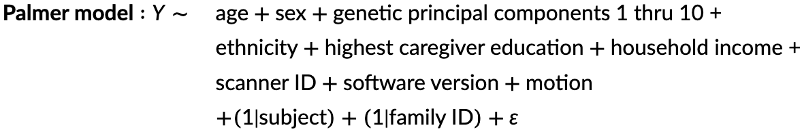

Overview
General Information
This document details how to obtain information, metrics, and imaging files from the magnetic resonance imaging (MRI) components of the ABCD Study. An in-depth discussion and reference resource on the ABCD processing pipeline is available at https://doi.org/10.1016/j.neuroimage.2019.116091.
Nomenclature
Every table in the Imaging domain has the prefix mr_y_ (mr: domain = “imaging”; y: source = “youth”), followed by abbreviations to describe the exact imaging data available.
Subdomain
- Administrative:
adm - Quality Control:
qc - Diffusion MRI (DTI):
dti - Diffusion MRI (RSI):
rsi - Resting State fMRI:
rsfmr - Structural MRI:
smr - Task fMRI:
tfmr
Metric
- Diffusion MRI (DTI)
- Fractional Anisotropy:
fa - Longitudinal Diffusivity:
ld - Mean Diffusivity:
md - Transverse Diffusivity:
td - Volume:
vol
- Fractional Anisotropy:
- Diffusion MRI (RSI)
- Free Normalized Isotropic:
fni - Hindered Normalized Directional:
hnd - Hindered Normalized Isotropic:
hni - Hindered Normalized Total:
hnt - Restricted Normalized Directional:
rnd - Restricted Normalized Isotropic:
rni - Restricted Normalized Total:
rnt
- Free Normalized Isotropic:
- Resting State fMRI
- Correlation:
cor - Temporal Variance:
var
- Correlation:
- Structural MRI
- Cortical Thickness:
thk - Sulcal Depth:
sulc - Surface Area:
area - T1 Intensity:
t1 - T2 Intensity:
t2 - Volume:
vol
- Cortical Thickness:
- Task fMRI
- Emotional N-Back:
nback - Monetary Incentive Delay:
mid - Stop Signal Task:
sst
- Emotional N-Back:
Atlas
- Diffusion MRI (DTI)
- AtlasTrack:
at - Desikan:
dsk - Destrieux:
dst - Subcortical:
aseg
- AtlasTrack:
- Diffusion MRI (RSI)
- AtlasTrack:
at - Desikan:
dsk - Destrieux:
dst - Subcortical:
aseg
- AtlasTrack:
- Resting State fMRI
- Desikan:
dsk - Destrieux:
dst - Gordon Parcellations:
gp - Subcortical:
aseg
- Desikan:
- Structural MRI
- Desikan:
dsk - Destrieux:
dst - Fuzzy Clustering:
fzy - Subcortical:
aseg
- Desikan:
- Task fMRI
- Behavior:
beh - Desikan:
dsk - Destrieux:
dst - Subcortical:
aseg
- Behavior:
Within the different imaging modalities, variables are grouped into tables using additional criteria. The resulting tables are listed in more detail in the data documentations pages for each specific imaging modalities. Users can use DEAP (Data Exploration and Analysis Portal) to explore what variables a given instrument contains and how instruments are hierarchically organized within the ABCD ontology. Abbreviations of anatomical locations for the ROI-based tabulated imaging tables are detailed in Supplementary Imaging Tables.
Expected MRI Series
The number of expected MRI series varies depending on participant scheduling, scanner manufacturer requirements, and repeat acquisitions during scanning. Scanning sessions are typically performed in one session for ~2 hours. However, sometimes the participant prefers completing the scan in two separate 1-hour sessions, typically a few minutes apart but occasionally separated by several days. If the scanning is split over two sessions, an initial T1 is acquired for reference at the start of each session, leading to two available T1 images. Additionally, because the T1 is the first, short essential scan of the session, the operator will repeat the scan if there is a problem with the acquisition (e.g. excessive motion). Other series may also have a repeat acquisition if there is enough time. If multiple acquisitions exceed the expected number of files, users should manually inspect the images for quality assurance.
Below is a guide to the expected number of series per modality/scanner manufacturer:
Note that the order of the task fMRI series acquisition is randomized per subject.
See https://abcdstudy.org/images/Protocol_Imaging_Sequences.pdf for more information about ABCD MRI protocols.
Imaging data sharing
MRI unprocessed data sharing
Unprocessed MRI data are shared as DICOM files in a BIDS source data format as well as NIfTI files in the standard BIDS raw data format. See ABCD MRI Unprocessed Data Sharing section for more information about ABCD MRI Raw Data Sharing.
MRI derivatives data sharing
Processed MRI data volumes are shared as NIfTI files in a BIDS derivatives format. FreeSurfer outputs are shared in their standard form, also within a BIDS derivatives format. See ABCD MRI Derivatives Data Sharing section for more information about ABCD MRI Derivatives Data Sharing.
Tabulated ROI-based Analysis
MR images are corrected for distortions and head motion, and cross-modality registrations are performed. Using the T1w sMRI scan, the cortical surface is reconstructed, and subcortical and white matter regions of the brain are segmented. From this, we carry out modality-specific analyses and extract imaging-derived measures using a variety of regions of interest (ROI).
Finally, ROI analysis results are compiled across participants and summarized in tabulated form. Information on the different tabulated imaging data instruments is detailed in modality-specific release notes:
- Structural Magnetic Resonance Imaging
- Diffusion Magnetic Resonance Imaging
- Resting-State Functional Magnetic Resonance Imaging
- Task-Based Functional Magnetic Resonance Imaging (task-fMRI)
- Behavioral Performance During Task-Based fMRI
Despite the convenience of ROI-based analyses and the advantages related to reduced numbers of statistical comparisons, there are inherent limitations to this approach. Effects of interest (e.g., associations between cortical morphometry and cognitive variables, or task- related fMRI activation) could potentially straddle multiple ROIs, or occupy a small region of a large ROI, thereby reducing the sensitivity of an ROI-based analysis relative to mapping-based approaches. For this reason, users should be cautious about interpreting the results of ROI- based analyses, particularly for task fMRI.
Quality Control and Recommended Image Inclusion Criteria
QC procedures and image inclusion criteria are described in more detail in the MRI Quality Control & Recommended Image Inclusion Criteria data documentation.
Recommended Inclusion Criteria
The Recommended Imaging Inclusion instrument (mr_y_qc__incl) provides the simple option of include or exclude sessions (1 or 0) based on automated and manual QC review per MR measure - T1w, T2w, DTI/RSI, rsfMRI, SST, nBack and MID tfMRI.
Incidental Findings
T1w and T2w images, if available, were screened for incidental findings by a board-certified neuroradiologist. Any findings requiring clinical investigation were relayed to appropriate site personnel via the ABCD Coordinating Center (CC). These MR findings (see instrument mr_y_qc__clfind) are not included in our recommended inclusion criteria but are noted here because some investigators may find them to be relevant inclusion criteria for their analyses.
Protocol Compliance and Quality Control
All ABCD MRI exams have been systematically checked for MRI protocol compliance and completeness, and images have been manually rated for quality by trained MR analysts before and after processing. All MRI data are provided, but we highly recommend that researchers filter subjects by QC results based on the project aims and tolerance for MR artifacts/motion. Severe artifact in all T1w image in a given visit (MRI Quality Control: iqc_t1_ok_ser = 0) results in the inability to produce subsequent MR-metrics for all other modalities.
E-Prime errors in task fMRI
For task fMRI, series were also excluded due to E-Prime problems including missing, corrupted, duplicated or unsynchronized E-Prime files. The variety of E-Prime errors that would invalidate the series are generalized in the task-specific QC instruments as being “mismatched” (iqc_mid_ep_t_series_match = 1; iqc_nback_ep_t_series_match = 1; iqc_sst_ep_t_series_match = 1). In manual review, some errors can be corrected, so there is an additional override to this switch when needed (eprime_mismatch_ok_mid = 1; eprime_mismatch_ok_mid = 1, eprime_mismatch_ok_mid = 1).
Behavioral performance in task fMRI
Behavioral measures calculated from participant button presses during task fMRI acquisition are also included (see Behavioral Performance During Task-Based fMRI release note). Based on those measures, behavioral performance flags are provided, indicating whether a subject’s performance for each task was within acceptable standards. It is suggested that users exclude subjects from group analysis based on sub-optimal performance and possibly additional criteria such as the number of degrees of freedom (reduced by motion censoring) in the individual subject task-fMRI analysis and/or based on outlier detection on the ROI-averages themselves. Users should choose inclusion/exclusion performance criteria that are appropriate for their analyses.
Responsible Use Warning: Head motion
Head motion is a serious issue for neuroimaging, and especially for resting state fMRI. It creates brain-wide artifactual effects including elevated short-distance connectivity and attenuated long-distance connectivity (Power et al. 2012). In order to guard against artifactual effects due to head motion, researchers typically implement a variety of strategies that operate at multiple points of the data collection and processing pipeline, with guidance regularly evolving over time (Power et al. 2014; Power, Schlaggar, and Petersen 2015; Satterthwaite et al. 2013; Siegel et al. 2017; Gratton et al. 2020). Some of these strategies include discarding entire runs of data that exceed certain motion thresholds and discarding individual functional imaging frames that are proximal to motion events (i.e., “motion censoring”). These strategies in particular typically lead to the exclusion of some participants from further analysis for lack of sufficient data. Levels of head motion differ according to demographic factors such as sex, race/ethnicity, and SES (Cosgrove et al. 2022). Therefore, strategies to deal with head motion may lead to differential exclusions across demographic groups. In addition, data quality procedures cause sessions to vary by the amount of data remaining. Such variability may continue to inflate findings especially in the presence of conditions that may correlate with the motion artifact like autism or ADHD (Eggebrecht et al. 2017). One strategy that avoids this confound is to strictly control the degrees of freedom, where functional connectivity measures are calculated with the exact same amount of data. To aid researchers in exploring this impact further, the ABCD study has released 5 minute- and 10 minute-trimmed and untrimmed functional connectivity datasets. Researchers interested in examining brain-behavior associations or multivariate predictions should follow strategies such as those in Eggebrecht et al. (2017): 1) assess how missing data impacts dependent, independent variables and covariates, 2) examine the association between the degrees of freedom and non-FC variables, 3) use trimmed FC measures when needed to mitigate artifacts due to data quality.
For more information please see: “Resting-state fMRI Data Documentation”.
Effects of scanner instance and software version
Multisite longitudinal MRI imaging data are potentially susceptible to influences of scanning parameters, scanner manufacturer, scanner model, and software version, which vary across sites, and sometimes across time. Some multisite correction methods (e.g., COMBAT) (Fortin et al. 2017) have been suggested for application to diffusion-weighted, structural, and functional imaging data, including for ABCD data (Dudley et al. 2023). The Imaging Workgroups have verified that scanner effects are detectable in ABCD data and are substantial enough in some circumstances that they warrant correction.
For diffusion imaging, derived-measures obtained from different scanner manufacturers/models have been found to vary substantially. Substantial effects of software updates have also been found on GE scanners between DV25 to DV26, and of Siemens between VE11 and XA30. Philips scanners have had a larger number of minor and major software upgrades, but it is unclear whether these impact the data substantially.
One recommended approach is to include scanner ID and software version as covariates in regression models. For example, this approach was applied by Palmer et al. (2022) in their report on age-related changes in restriction spectrum imaging (RSI) metrics calculated from the diffusion-weighted imaging scan. An example model is below:

Investigators should make informed decisions based on the analytic goals. For example, some investigators have recommended including “site”, either as a fixed or random effect, in regression models (Dick et al. 2021). However, it may be unnecessary to model “site” as a fixed effect if “scanner ID” is included, but this also may depend on whether random effects are modeled as nested effects (e.g., subject within family within site). In some cases, scanner variables may be collinear with other predictors of interest. For example, if one is examining a specific sub-sample, scanner upgrades may occur between scheduled data collection, increasing the probability that age is collinear with changes in scanner software. Investigators should carefully check their statistical models for issues with multicollinearity. Indeed, in some cases statistical packages will fail to return a result for collinear variables. For example, depending on the analysis, R may fail to return a result, or return a “Singular fit” warning. Investigators may want to assess the Variance Inflation Factor from the car package (e.g., vif(model)), which will return values that indicate the degree of collinearity for each variable in the model. Investigators can manually remove predictors that are collinear.
When running FEMA for voxel- or vertex-wise data analysis, the custom R function makeDesign will check the rank of the design matrix during its construction, and drop columns that are collinear (see https://github.com/cmig-research-group/cmig_tools/blob/main/cmig_tools_utils/r/makeDesign.R).
In summary, investigators should be aware of potential effects of scanner manufacturer and software, and carefully control for these effects in their analyses.
Concatenated data
To facilitate whole-brain analyses of 3D volumes at the voxel-level and cortical surfaces at the vertex level, we have concatenated the complete neuroimaging data from the ABCD Data Release 6.0 across all observations, for multiple imaging phenotypes across all imaging modalities.
Voxelwise data
To establish anatomical correspondence across all observations, the ABCD atlas was synthesized using the Multimodal Image Normalisation Tool (MINT) developed by the DAIRC. The MINT ABCD atlas is generated from baseline and two-year follow up imaging data and all observations included in Data Release 6.0 from all modalities were registered to the ABCD atlas. Below is a brief overview, for more details please see Pecheva et al. (2022).
Methods
Image processing and analysis methods corresponding to ABCD Release 2.0.1 are described in Hagler et al. (2019). Changes to image processing and analysis methods in prior releases are documented in the relevant release notes below.
References
Cosgrove, Kelly T., Timothy J. McDermott, Evan J. White, Matthew W. Mosconi, Wesley K. Thompson, Martin P. Paulus, Carlos Cardenas-Iniguez, and Robin L. Aupperle. 2022. Brain Imaging and Behavior 16 (4): 1919–25. doi:10.1007/s11682-022-00665-2.
Dick, Anthony Steven, Daniel A. Lopez, Ashley L. Watts, Steven Heeringa, Chase Reuter, Hauke Bartsch, Chun Chieh Fan, et al. 2021. NeuroImage 239 (October): 118262. doi:10.1016/j.neuroimage.2021.118262.
Dudley, Jonathan A., Thomas C. Maloney, John O. Simon, Gowtham Atluri, Sarah L. Karalunas, Mekibib Altaye, Jeffery N. Epstein, and Leanne Tamm. 2023. Neuroinformatics 21 (2): 323–37. doi:10.1007/s12021-023-09624-8.
Eggebrecht, Adam T, Jed T Elison, Eric Feczko, Alexandre Todorov, Jason J Wolff, Sridhar Kandala, Chloe M Adams, et al. 2017. Cerebral Cortex 27 (3): 1709–20. doi:10.1093/cercor/bhw403.
Fortin, Jean-Philippe, Drew Parker, Birkan Tunç, Takanori Watanabe, Mark A. Elliott, Kosha Ruparel, David R. Roalf, et al. 2017. NeuroImage 161 (November): 149–70. doi:10.1016/j.neuroimage.2017.08.047.
Gratton, Caterina, Ally Dworetsky, Rebecca S. Coalson, Babatunde Adeyemo, Timothy O. Laumann, Gagan S. Wig, Tania S. Kong, et al. 2020. NeuroImage 217 (August): 116866. doi:10.1016/j.neuroimage.2020.116866.
Hagler, Donald J., SeanN. Hatton, M. Daniela Cornejo, Carolina Makowski, Damien A. Fair, Anthony Steven Dick, Matthew T. Sutherland, et al. 2019. NeuroImage 202 (November): 116091. doi:10.1016/j.neuroimage.2019.116091.
Palmer, Clare E., Diliana Pecheva, John R. Iversen, Donald J. Hagler, Leo Sugrue, Pierre Nedelec, Chun Chieh Fan, Wesley K. Thompson, Terry L. Jernigan, and Anders M. Dale. 2022. Developmental Cognitive Neuroscience 53 (February): 101044. doi:10.1016/j.dcn.2021.101044.
Pecheva, Diliana, John R. Iversen, Clare E. Palmer, Richard Watts, Terry L. Jernigan, Donald J. Hagler, and Anders M. Dale. 2022. bioRxiv. doi:10.1101/2022.08.09.503395.
Power, Jonathan D., Kelly A. Barnes, Abraham Z. Snyder, Bradley L. Schlaggar, and Steven E. Petersen. 2012. NeuroImage 59 (3): 2142–54. doi:10.1016/j.neuroimage.2011.10.018.
Power, Jonathan D., Anish Mitra, Timothy O. Laumann, Abraham Z. Snyder, Bradley L. Schlaggar, and Steven E. Petersen. 2014. NeuroImage 84 (January): 320–41. doi:10.1016/j.neuroimage.2013.08.048.
Power, Jonathan D., Bradley L. Schlaggar, and Steven E. Petersen. 2015. NeuroImage 105 (January): 536–51. doi:10.1016/j.neuroimage.2014.10.044.
Satterthwaite, Theodore D., Mark A. Elliott, Raphael T. Gerraty, Kosha Ruparel, James Loughead, Monica E. Calkins, Simon B. Eickhoff, et al. 2013. NeuroImage 64 (January): 240–56. doi:10.1016/j.neuroimage.2012.08.052.
Siegel, Joshua S., Anish Mitra, Timothy O. Laumann, Benjamin A. Seitzman, Marcus Raichle, Maurizio Corbetta, and Abraham Z. Snyder. 2017. Cerebral Cortex 27 (9): 4492–502. doi:10.1093/cercor/bhw253.